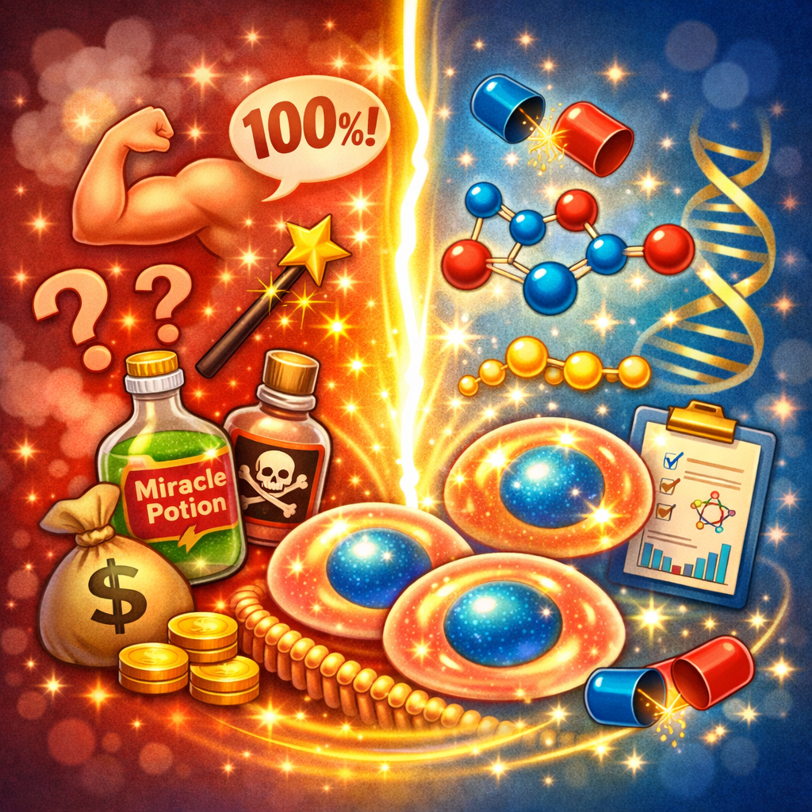

Con el creciente interés en los péptidos, también han surgido numerosos mitos y malentendidos. En este artículo, separamos la ciencia de la ficción para que puedas tomar decisiones informadas sobre tu salud.
Mito 1: "Los péptidos son esteroides"
❌ MITO
Mucha gente confunde péptidos con esteroides anabólicos.
✅ REALIDAD
Los péptidos son cadenas de aminoácidos, los mismos bloques que forman las proteínas de los alimentos. Los esteroides son compuestos lipídicos con una estructura química completamente diferente. Los péptidos no son hormonas esteroideas y no tienen sus efectos secundarios.
Mito 2: "Todos los péptidos son inyectables"
❌ MITO
Existe la creencia de que los péptidos solo funcionan inyectados.
✅ REALIDAD
Muchos péptidos están disponibles en formatos tópicos (cremas y sérums) y orales (cápsulas y polvos). El colágeno hidrolizado, uno de los péptidos más populares, se consume por vía oral con excelentes resultados para piel y articulaciones.
Mito 3: "Los péptidos son peligrosos y no están regulados"
❌ MITO
Se cree que los péptidos no tienen control de calidad.
✅ REALIDAD
Los péptidos utilizados en cosmética y suplementación están regulados por las autoridades sanitarias. Muchos péptidos terapéuticos han sido aprobados por la FDA y otras agencias reguladoras para usos médicos específicos. Como con cualquier suplemento, es importante adquirirlos de fuentes confiables.
Mito 4: "Los resultados son inmediatos"
❌ MITO
Se esperan cambios drásticos en días.
✅ REALIDAD
Los péptidos trabajan estimulando procesos biológicos naturales, lo cual lleva tiempo. Los resultados visibles en la piel pueden tardar de 4 a 12 semanas. La consistencia es clave para obtener beneficios.
Mito 5: "Si es natural, no tiene efectos secundarios"
❌ MITO
Por ser "naturales", se asume que son 100% seguros.
✅ REALIDAD
Aunque los péptidos son biocompatibles, pueden tener efectos secundarios en algunas personas, especialmente en dosis altas. Es fundamental respetar las dosis recomendadas y consultar con un profesional de la salud si se tienen condiciones médicas preexistentes.
Artículos Relacionados